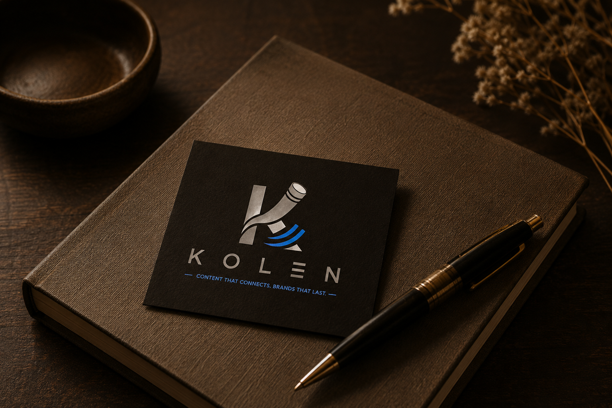

Tools
Tools for the work behind the book.
A growing collection of services created to support authors, their books, and their professional presence.
Give your work
a place of its own.
Professional websites created for authors who want a dedicated presence beyond the pages of their books.
Kryselum Webs provides the structure and design needed to create a professional author website, from the initial setup to its ongoing maintenance.
For Kryselum authors
The initial website setup may be provided at no additional cost when publishing with Kryselum. Hosting and ongoing maintenance are offered as a monthly service.
Explore Kryselum Webs
Before a book meets
its reader, it needs
structure.
Theruma is Kryselum's professional formatting service, created to prepare manuscripts for publication with care, consistency, and attention to detail.
It focuses on the visual structure of the book: typography, spacing, pagination, chapter openings, and the many details that turn a manuscript into a finished book.
For authors who need professional formatting without publishing through Kryselum.
Explore Theruma
Become known.
Be remembered.
Kolen is the author branding and marketing side of the Kryselum ecosystem.
It exists to help authors develop a professional identity around their work and create a stronger presence beyond the book itself.
Support can include marketing strategy, social media, SEO, blog content, author presence, and promotional opportunities.
Available at different levels of support, from the basic Kolen support included with Kryselum publication to expanded packages for authors who want to develop their visibility further.
Explore KolenMore tools will follow
Kryselum Tools will continue to grow as new services are developed around the needs of authors and their work.